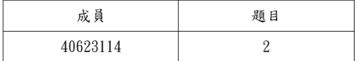

W6-W9 <<
Previous Next >> W15-W18
W10-W14
Week10
第三組第三次直播會議
開會紀錄PDF連結:
https://drive.google.com/open?id=1AP49O_JYqgqQNDzEz7Pxj-tzjugL8Bb2
作業三:
根據對Topic2和Topic3的閱讀，使用CoppeliaSim、Webots、Onshape提出一個機電一體化項目。

Week11
gm用戶登入設置
1.登錄學校的個人gm信箱,到 https://console.developers.google.com 網站。
2.建立專案，自行設定專案名稱。
3.git clone cd2020pj1倉儲，放在Y/tmp下。
4.至api設定頁面點選啟用API和服務，並點選Google+ Domains API。
5.點選憑證設定同意畫面，選擇內部建立，設定名稱後儲存。
6.建立憑證及oauth用戶端id。選擇網路應用程式後建立。
7.產生的id跟密碼要儲存在編輯器，存為oauth_s個人學號.txt
8.設定來源跟導向的URl，來源設定為 https://localhost:8443，導向設定為 https://localhost:8443/login/google/ ，後儲存。
9.開啟先前clone cd2020pj1的leo，將key file的open都命名為oauth_s個人學號.txt，接著點選ROC 。
10.開啟編輯器打入 pip install authomatic，需用新版python
11.即可開啟近端
第四次小組會議
第四次因事未到
Week12
第五次小組會議
開啟ubuntu
1.點入

2.勾選下面3個選項 點擊IMPROVE


3.進入畫面

4.點擊START就可以開始編輯程式
Ubuntu設定及API連線
1.下載vitualbox、ubuntu、CoppeliaSim四輪車控制器檔案。
2.開啟vitualbox，匯入ubuntu。
3.設定虛擬主機的網路埠號，連接埠轉送->設定三個埠號(22、8443、19999)
4.完成即可啟用，輸入密碼kmol2020，接著開啟lxterminal。
5.隨步驟打開coppeliasim，cd coppeliasim4_rev4->ls->cd CoppeliaSim_Edu_v4_0_0_Ubuntu18_04->ls->./coppeliaSim.sh，接著打開sdc.ttt。
6.開啟CoppeliaSim將car_model.py放入編譯器中，接著執行
7.開始模擬四輪車旋轉
Week13
IPv4 遠端控制設定
1.開啟cmd命令窗
2.輸入ipconfig來取得IPv4的IP
3.將虛擬主機的埠號中IP改為個人查得之IP
4.啟動Ubuntu並開啟XLaunch.exe
5.開啟putty，並輸入遠端連線之IP
6.將Enable X11 fowarding打勾並在X display location中輸入localhost:0.0
7.儲存後啟動,帳號及密碼輸入kmol2020
8.輸入xterm&，並進入cd2020pj1
9.進入docs及cmsimde
10.輸入vi wsgi.py編輯
11.將近端的host改為10.0.2.4,按Esc並輸入:wq存檔。
12.TMP下輸入python3 wsgi.py，網址為該主機IP加上17443
Week14
W14抽點網站:http://mde.tw/cdbw14-1
FileZilla

FileZilla是一個免費軟件，跨平台 FTP應用程序，由FileZilla Client和FileZilla Server組成。客戶端二進製文件可用於Windows，Linux和macOS，服務器二進製文件僅可用於Windows。服務器和客戶端都支持FTP和FTPS，而客戶端還可以連接到SFTP服務器。
W6-W9 <<
Previous Next >> W15-W18